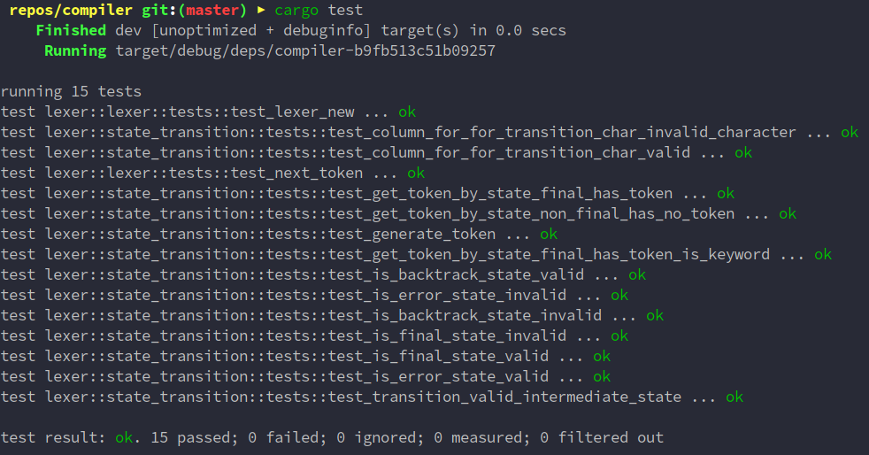
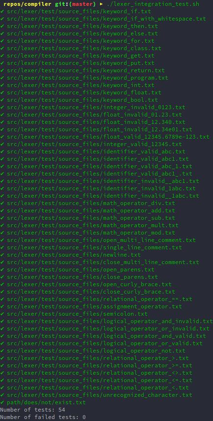
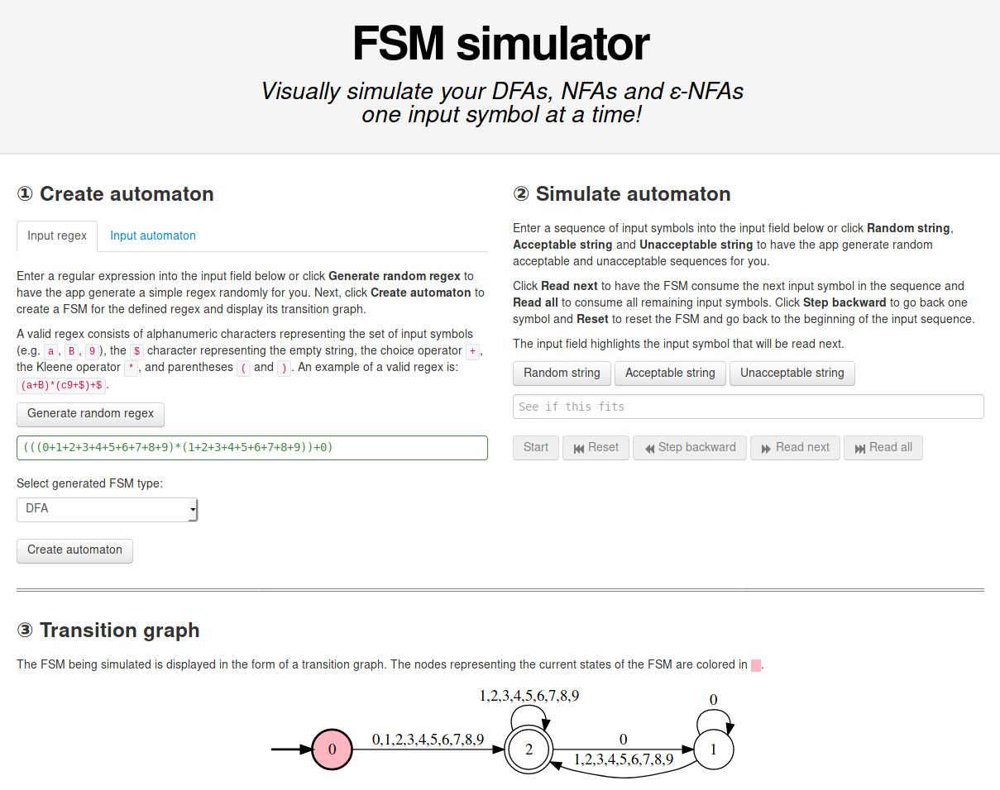

The crs Compiler
crs is a compiler implemented in Rust for a C++-like language, built for the COMP 422 - Compiler Design course at Concordia University. Here's a sample program.
Getting Started
The nightly build of the Rust programming language is required to compile this project.
First, install rustup and then run rustup default nightly.
You can compile and run the entire project with the following command:
cargo run -- tests/lexer/source_example.crs
Documentation
The compiler documentation can be read as Markdown parsed by GitHub or as HTML rendered by mdBook.
All documentation is written in markdown in /docs/src. The HTML version can be generated with mdbook by running mdbook build in the root directory.
Testing
Unit Tests
Unit tests for the compiler application can be run with:
cargo test

Integration Tests
Integration tests can be run using a simple bash script to query the output of commands:
./tests/lexer/lexer_integration_test.sh
These provide appropriate test cases that test for a wide variety of valid and invalid cases in the language.

Component Implementation and Architecture Overview
The lexer is designed in a modular fashion in order to a clean separation of concerns.
Main Function
The main function's current responsibilities are to parse the command-line application's required arguments (the path to the source code file), ensure that the provided path exists, instantiate a single lexer for the entire duration of the lexical analysis, and call the nextToken function until the entire source code have been tokenized.
Lexer
The lexer's responsibility is to manage the progress of the lexical analysis of the source code. It buffers and streams the source code to be analyzed as tokens are extracted. It maintains state about the current index of the source code being accessed, and is effectively a data structure that is passed to the state transition functions. Every call to nextToken results in the instantiation of a new StateTransition object which handles all transitions between FSM states on character input until a valid token is identified.
State Transitions
The StateTransition module contains all information relating to transition internal state of the FSM on character input. It manages it's own internal state (the current and next states) as well as the lexer's state (which characters are being read at which index of the source code).
The state transition table is a static two-dimensional array that encodes all possible transitions between all valid states. This is referred to when new characters are being read, which ultimately updates the current state and the position in the source code. The table also encodes information as to whether the current state is an error, final, or backtrack state, and the module is responsible for taking the appropriate action in these cases, which could include generating a token, modifying the buffer for the extracted lexeme, and reporting encountered error states.
Token
The token is a simple data structure that stores the token's class and extracted lexeme as strings in a struct. Further improvements would be to restrict the token's class to a set of defined TokenClass enum structures which encode peculiarities about certain classes (for example, comment and newline tokens), as opposed to arbitrary text input.
Error Output
An ErrorType enumeration is defined in the output::error module to differentiate between recoverable and unrecoverable errors. It is also responsible for defining all possible sorts of errors, as well as outputting basic error information to standard output.
Source Line Output
The output::source_line module is able to analyze the information in the lexer data structure containing the source code and the current point of analysis, and print relevant lines and characters to standard output when errors occur.
Tools/Libraries/Techniques Chosen
- The AtoCC RegExp and kfG Editor applications were used for converting the regular expressions identified as part of the lexical specification into DFAs, as well as ensuring the syntax CFG was converted to LL(1) for predictive parsing. Althought the tool was used in the constructed of the DFA shown above, the current application does not output the generated tokens as a file in the AtoCC format.
- The FSM simulator website was used for a quick but less vigorous validation of the conversion of regular expressions to DFAs.
- The lazy_static Rust library was used in order to statically store the large state transition table with values known at compile-time.
- The Ropey library was used as a Rust library to buffer the source code using the rope data structure as it is being lexically analyzed, as well as keep track of lines and line numbers for when outputting errors. I was not able to find any other data structure that modeled the lexical analysis use case so appropriately.
- The clap Rust library was used for simple command-line argument parsing. It was chosen given that it is mature and well-regarded in the Rust ecosystem.
- The colored Rust library was used for prettier output during error reporting. It was chosen for it's ease of use and minimalism.
